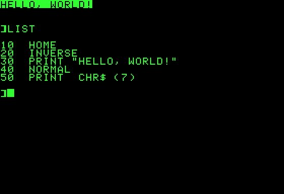

One of the most primitive programming languages and one of the simplest and most popular programming languages. Its name stands for Beginners All Purposes Symbolic Instruction Code which means the multipurpose symbolic command code for beginners. Designed by John Kimini and Thomas Kurtz in 1964 as an interactive time-sharing language for major computers, it is largely based on the FORTRAN language and has become widely used on personal computers everywhere.
As a result of the simplicity of this language, it has been adopted to teach introductory concepts to programming. As a result of the ease of learning and readability by other programmers and the support available on most operating systems; It is still widely used. Audio and graphics are often supported and used in many commercial applications
It is commonly used today with Microsoft's Visual Basic VB programming language, which has a graphical interface and object-oriented features.
History of the Basic language
In the 1960s, supercomputers required special rooms with powerful air conditioning to keep them cool. These central computers were instructed by computer operators via software specifically written to perform this instruction by computer scientists and mathematicians. This is how the Basic language, which was born at Dartmouth College in 1963, changed that.
The purpose of its creation was to constitute an educational tool for undergraduates, and the language was an easy step in entering the world of other more powerful languages such as Fortran. Until recently, Basic (Visual Basic and .net Basic) has been widely known to developers.
The emergence of personal computers formed the nucleus of its success, after which Paul Allen and Bill Gates wrote in 1975 to write a copy of the personal computers, which was the first Microsoft product to be sold. Later, Bill Gates and Microsoft wrote basic versions for Apple and IBM's Dos.
Basic table of basic commands
The name of the command
the use
HELLO
sign in.
BYE
sign out.
BASIC
Starting basic mode
NEW
Name and start writing a program
OLD
Recover an old program that was previously written.
CATALOG
Display the names of the programs on the volume.

Basic Basic language features
Basic offers several advantages, including:
Allow creation of loops.
It allows input from the keyboard.
Structured programming language.
It contains different system commands.
Applications support different file lists.
It allows you to create functions and use predefined functions.
Allow the use of sub functions
The applied areas of the Basic language
This language is designed for interactive work. As a result of its ease, it can be learned and used even for people with little knowledge of mathematics.
It also has many features that make it useful for advanced users, in addition to that it is indispensable in commercial applications as the user usually tends to simplicity in such applications.
Basic language between past and present
Although this language accompanied the first advances in the way of learning to program and enter this broad world, this did not intercede for it. As always, we tend to be new and serve our business more, so we have had to look for other, more sophisticated alternatives.
A simple comparison between several previous years and now we find that many programmers of the time are not even aware of any of the language commands, so their use has dwindled dramatically in the past ten years, paving the era where there is no place for this language.